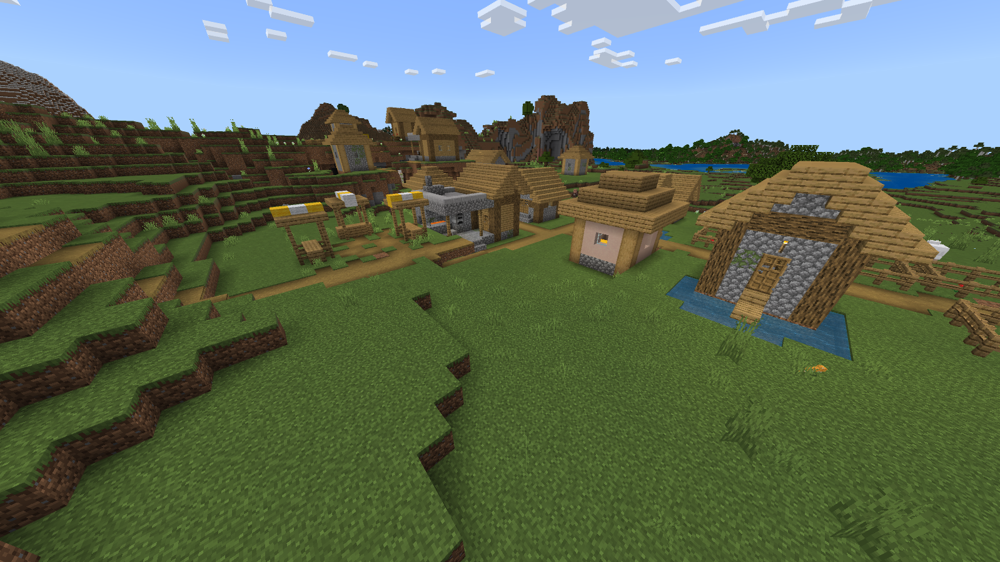

Vila

As Vilas são encontradas em vários biomas, como planícies, desertos e savanas. Elas são habitadas por aldeões que podem trocar itens com o jogador.
Saiba mais...As Vilas são encontradas em vários biomas, como planícies, desertos e savanas. Elas são habitadas por aldeões que podem trocar itens com o jogador.
Saiba mais...Monumentos do Oceano são estruturas subaquáticas habitadas por guardiões. Eles contêm salas com esponjas e tesouros.
Saiba mais...As Mansões da Floresta são encontradas em florestas densas e contêm mobs hostis, como evocadores e vindicadores.
Saiba mais...A Câmara do Julgamento é uma estrutura que contém mobs e serve como uma arena de batalha no jogo.
Saiba mais...A Cidade Antiga é uma estrutura subterrânea que é um dos locais mais perigosos do jogo, onde o Warden pode ser encontrado.
Saiba mais...Iglus são estruturas de gelo que podem ser encontradas em biomas de tundra. Eles são habitados por um esqueleto e podem conter um baú com itens.
Saiba mais...Os Postos de Observação são estruturas de altura que permitem ao jogador ter uma visão ampla do terreno ao redor. Eles podem conter itens úteis e são geralmente encontrados em biomas de montanha.
Saiba mais...A Casa da Bruxa é uma estrutura que pode ser encontrada em pântanos, habitada por bruxas. Ela contém uma mesa de poções e pode ter baús com ingredientes.
Saiba mais...
Os Bastiões do Nether são grandes estruturas que contêm loot valioso e mobs como piglins e brutes.
Saiba mais...As Fortalezas são estruturas que contêm mobs como blazes e wither skeletons, além de terem loot valioso.
Saiba mais...
A Cidade do End é uma estrutura localizada no The End, cheia de loot e onde se pode encontrar o Dragão do End.
Saiba mais...
O Portal do End é a estrutura que leva o jogador ao The End, e deve ser ativado com Olhos de Ender.
Saiba mais...